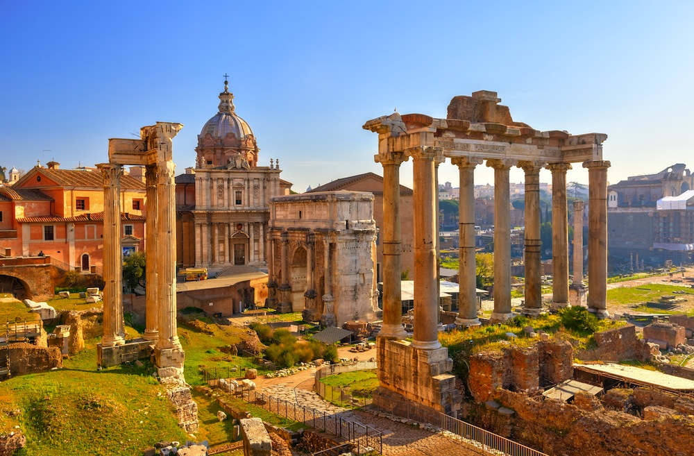
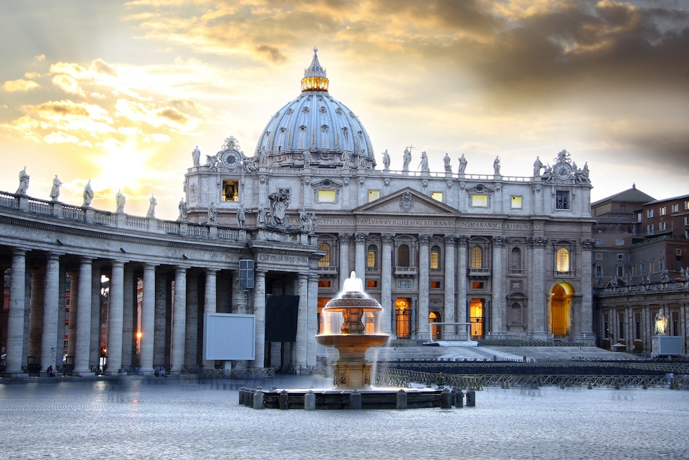
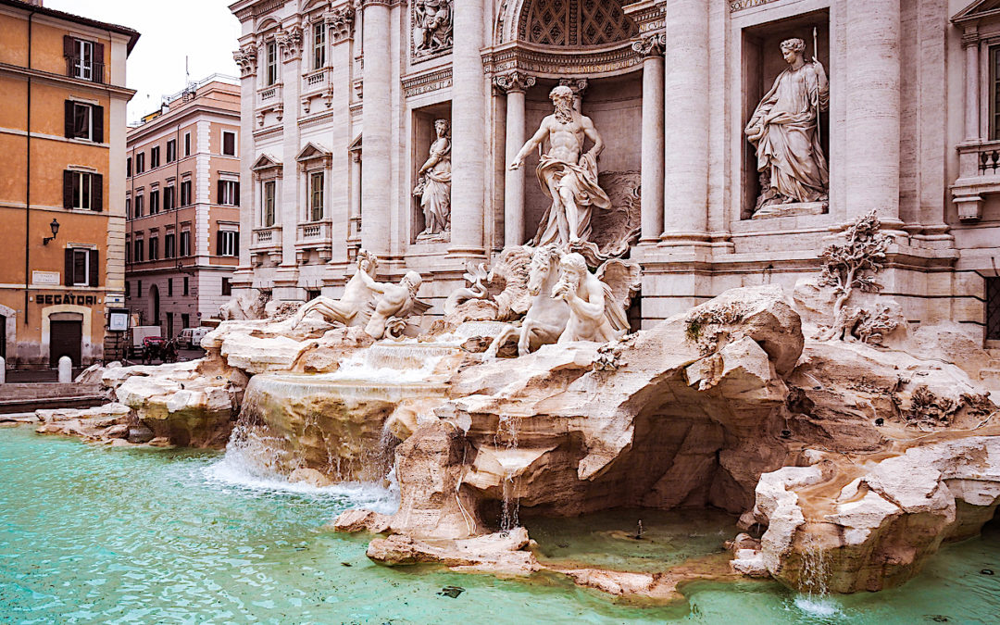

Descubre la maravilla de viajar por el mundo. ¡Haz clic para obtener más información!
Roma

Un viejo dicho romano afirma que Roma, "non basta una vita per scoprirla", esto es:
“Una vida no es suficiente para descubrir Roma."
Atractivos Turísticos



-
Basílica de San Pedro
-
Via dei Fori Imperiali
-
El Vaticano
-
Coliseo Romano
Itinerario
Día 1: Basílica de San Pedro
Descubre la Basílica de San Pedro, en el día de San Pedro. Leer más
Día 2: El Coliseo
Conoce el Coliseo. En pleno centro histórico de Roma descubrirás el Coliseo. Leer más
Día 3: Roma nocturna
Roma nocturna. Pasear por las famosas plazas. Leer más
Día 4: El Vaticano
Visita al Vaticano, para conocer la Basílica de San Pedro, los Museos Vaticanos y la Capilla Sixtina.
Día 5: Pompeya y Herculano
Las ruinas de Pompeya y Herculano. Leer más